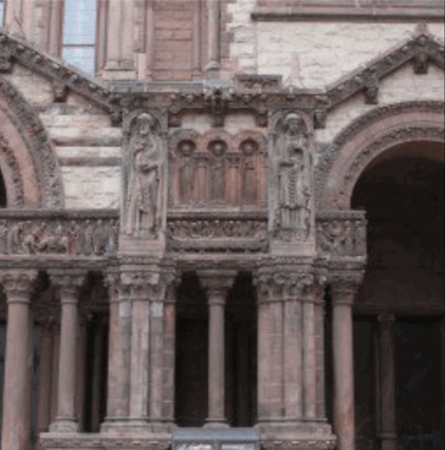
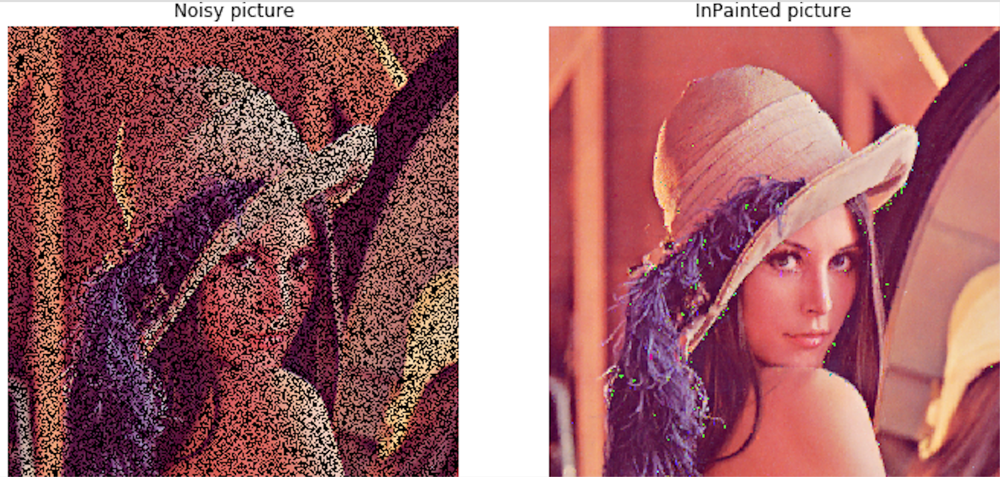

Chieng Chang, Xingyun Chang, Fei Ding, Jinchen Ma, Bingyao Wang Fall 2020 CS 4476 Computer Vision Class Project Georgia Tech
Teaser Figure
Introduction
There are many different types of image inpainting algorithms developed by researchers across the world. However, due to their differences in techniques and implementations each has significantly different results. Thus we decided to explore these techniques and compare their corresponding results.
We propose a system that effectively achieves image inpainting using various techniques and algorithms. The goal of the project is to compare the result between different implementations of image inpainting algorithms on the same image.
The expected input of the system would simply be an image marked with sections to be impainted.
The expected output of the system would be multiple images impainted by different algorithms. Users would have the freedom to choose whichever output they prefer.
Detailed Approach
We will employ various image inpainting techniques on one set of testing dataset. Our approaches include three classical, non-learning methods and one learning based deep architecture using GAN. After all implementations, we will then compare which technique is most suitable for each input image.
Traditional Approaches
Image inpainting via dictionary learning and sparse representation [1]
In the original paper, it is a novel patch-wise image inpainting algorithm using the image signal sparse representation over a redundant dictionary. Within this approach, we construct a redundant signal dictionary by directly sampling from the intact source region of the current image. Then we sequentially compute the sparse representation for each incomplete patch at the boundary of the hole and recover it until the whole hole is filled. When our group approached this method, we made some simplifications. For each missing part of an image, we want to take into account some numbers of patches that contain the most information in common with the missing part. In other words, we try to approximate a part of an image by a linear combination of other patches in the image.
Image Completion using Planar Structure Guidance [2]
The algorithm uses pre-computed vanishing points using the approach as suggested in the original paper. We used this program to output a list of vanishing line endpoints because our algorithm relies on them to infer spatial and structural cues.We then used these parallel lines to detect planar surfaces in space and regularities (artificial repeated patterns). We then computed the SIFT descriptor for each feature point and found the two nearest neighbors to the missing region of interest. The different detected planes are used as the separators when considering the neighbors, so only the neighbors on the same plane will be considered matches. The matched patches then underwent an affine transformation to fit into the missing locations. Finally, the image completion technique depended on a variant of Wexler’s algorithm with random search and propagation to complete the low-level matching.
Exemplar-Based Image Inpainting [3]
This algorithm removes sections in the input image marked by user and inpaint by generating textures and structures based on samples selected from surrounding regions. They are inspired by the partial differential equations of physical heat flow, and work convincingly as restoration algorithms. Unlike traditional algorithms, it pays special attention to linear structures -- It fills holes in images by propagating linear structures into the target region via diffusion. For a given image, the user firstly selects the region that would be inpainted, calling it as the target region. The rest of the image is the source region. Then, we create a template window in the source region. After that, there are three steps. Firstly, we compute patch priorities, and we determine the priority values of each patch on the fill front. Secondly, we propagate texture and structure information on the target region. There is a patch with the highest priority, and we use data from the source region to fill that patch. Thirdly, we update confidence values for the patches that have been assigned with new pixel values, so that we can measure the relative confidence of patches on the fill front.
Learning-Based
GAN - Semantic Image Inpainting [4]
Semantic image inpainting with progressive generative networks utilizes deep learning techniques, specifically generative adversarial networks (GANs). The newly proposed model comprises an end-to-end framework called progressive generative networks (PGNs) followed by a long short-term memory (LSTM) framework. The hole filling process is broken down into several phases of PGN and connected together with LSTM in a single forward pass.
Different from the canonical diffusion-based and example-based approaches, our PGN-based approach is capable of synthesizing semantic content to recover large missing areas with a less computationally expensive framework. We will leverage deep learning techniques, devising semantic image inpainting as a curriculum learning problem, to generate realistic areas to replace large areas of corrupted pixels. We are motivated to utilize the PGN approach considering that the process of inpainting subregions farther from (marked with a green square in the figure below) known pixels is more difficult than inpainting subregions closer to (marked with a red square) known pixels. Therefore, we will be inpainting from exterior to interior missing subregions.
Experiments and Results
Data Collection and Implementation
All traditional CV approaches we experiment in this project do not involve training their models. In fact, they tend to work in a similar fashion on a high level: these algorithms first find neighboring patches near the regions that require inpainting, evaluate these candidates using different techniques, and finally apply some variants to the target areas. Therefore, there is no dataset used for the traditional portion of this project. On the other hand, we will be using some sample images provided in the original paper (with proper citation) for demonstrating the effectiveness of each traditional approach, but these “datasets” are small in scale compared to the real public datasets used in deep learning.
For the learning-based part, considering that GAN is a learning-based technique, we will utilize a training dataset and a testing dataset for better accuracy and generalizability. Testing and training sets are extracted from Paris StreetView and ImageNet dataset. Paris StreetView dataset consists of 14,900 images for training and 100 images for testing. The visual class of dataset focuses on the Street Siew, such as houses, trees, street, skies, and other objects. Whereas ImageNet dataset contains about 15 million images associated with more than 20,000 categories. Considering the experimental configuration of Context Encode, we extract a subset of the ImageNet dataset in this experiment. Specifically, we randomly select 100k images from 1000 object categories according to the manner provided by Context Encoder. The testing set is painted in the same way of training progress.
We also plan to use our own data. Our data collection is used for comparing and analyzing how each of the implementations works on various types of inpainting issues. We would use images with/without text, images with a large number/small number of holes, images with big/small holes, images with holes that are in a color that is close/distinctive from surrounding colors, portrait images, landscape images, etc. In this way, we make comparison groups, use images within a group as inputs for our implementations, and print the outputs. We compare the output images and analyze the effectiveness of the implementations. We also expect to conclude that there are some implementations that work distinctively better for certain inpainting issues.
Image inpainting via dictionary learning and sparse representation
For this method, we used the datasets from photo galleries provided by USPS, and this database is already separated into training and testing sets. We did several experiments on some of the functions and parameters. We first compared different cost functions including MSE, L1 or Lasso regularization, and L2 or Ridge regularization. Though the differences in costs were not far away, we chose to use L1/Lasso regularization as our cost function because it tends to assign 0 in the weight vector, and we hope not to use too many patches to synthesize the missing part. We then conducted experiments on several parameters including patch_size, step(iteration step for dictionary construction), alpha(the importance given to the sparsity of the weight vector), max_iterations, and tolerance(the minimum optimization criterion before stopping).
a) α = 0.5, which is too big. We performed a linear combination with too many patches, leading to this blur effect.b) patch_size=5, which is too small. The patches do not contain enough information to be properly reconstructed. In addition, the pixels that have just been approximated are taken into account too much, still leading to a bad result.c) max _iterations = 1000, which is too little. We are not able to find the optimal weights for our reconstruction after reaching this max iteration number.d) α = 0.0001, patch_size = 101, max_iterations = 100,000. The reconstruction looks visually correct, but it can surely be improved even further.
We learn from those experiments that it is critical to set appropriate values for those parameters. The patch size has to have a size that encodes enough information to be useful for reconstruction. The alpha, generally, is always better to be set to a smaller value because a more sparse combination of patches normally has better results. The max iterations should be set to a larger value since it usually takes more iterations to find a good weight vector for a regular-sized picture.
Image Completion using Planar Structure Guidance
We used a few of the authors’ provided images as well as our own photo collections to demonstrate the effect. The objective function we tried to minimize is a weighted combination of four loss functions: appearance cost, guidance cost, orthogonal direction cost, and proximity cost. We started with a resized image with low resolution to have just a small number of pixels to optimize, and gradually sharpened the starting image close to the original image size. Below is a table of costs for one sample image when the patch size is 9. Here we show how the average cost decreases as we run more iterations.
From the above table and figure, we can observe a trade-off between precision and time. The more resolution we want from the final result, the longer it takes to complete!
The patch size is another hyperparameter we can adjust to obtain the optimal results. Through our experimentation, we found a larger patch size (PS) generally leads to worse performance, where the patch size must be constrained as an odd number.
Exemplar-Based Image Inpainting
For this project, we have mainly used photos randomly chosen from Google as our primary data set.
We have applied this algorithm onto 15 photos with each significantly different from others in terms of semantics, colors, structures, textures, features, etc.
We decided to use random photos from Google as my testing data set in order to test the algorithm on a variety of photos so that We could measure whether the algorithm will perform differently on different types of inputs.
The evaluation technique we have employed is to visually exam the quality of the output image.
There are not really many tuning parameters we could pick.
1. Patch size: this is the size of each patch we used to fill the hole in the image. It should be slightly larger than the largest distinguishable texture element for the best performance.
2. Mask: this is the mask used for input image pre-processing. It is used to create holes from the image for which would later be filled by the algorithm.
3. Alpha: The normalization factor. Have kept the value as 255 for the best result.
Below are some brief demonstrations of the algorithm.
* darker pixels means less confident
This is another example, where our algorithm outperforms the naive image filling technique:
Notice that according to these sample outputs, we can easily observe that our algorithm performs best when we are trying to fill hole in the input image where it was supposed to contain important information/semantics. This is expected as we have introduced new concepts -- confidence -- when performing hole-filling. With this approach we were able to recover certain important textures/information of the image. In summary, overall this algorithm has successfully fulfilled the goal of performing image inpainting with the most visually plausible backgrounds.
Semantic Image Inpainting
Considering that GAN is a learning-based technique, we will utilize a training dataset and a testing dataset for better accuracy and generalizability. Testing and training sets are extracted from Paris StreetView and ImageNet dataset. Paris StreetView dataset consists of 14,900 images for training and 100 images for testing. The visual class of dataset focuses on the Street View, such as houses, trees, street, skies, and other objects. Whereas ImageNet dataset contains about 15 million images associated with more than 20,000 categories. Considering the experimental configuration of Context Encode, we extract a subset of the ImageNet dataset in this experiment. Specifically, we randomly select 100,000 images from 1000 object categories according to the manner provided by Context Encoder. The testing set is painted in the same way of training progress.
We are proving that our PGN-based approach is superior to other traditional approaches by comparing the results of phased inpainting to one-action inpainting. As shown in the figure below, our PGN-based phased approach yields better image inpainting results than inpainting that is completed in one go.
The generative networks, precisely UNet, aids in preserving information in image-to-image translation tasks. The discriminative networks, in our case PatchGAN, determine how natural the generated image is. Besides the two networks, we also measure the quality of our result with a loss function, which consists of a reconstruction (L1) loss, an adversarial loss and a total variation loss.
We also experimented with different adversarial loss values, and found that values that are too large may produce a distorted image when high-level semantic features can’t be discriminated. The figure below shows that an adversarial loss value of 0.001 is optimal.
Qualitative Results
Success Cases

Failure Cases

Conclusion and Future Work
For the sparse representation method, we believe this way of inpainting can be applied to many scenarios and the results are promising from our experiments. Still, there is still a huge space for us to tweak the parameters to achieve better results. Besides, as a drawback of this approach, it is impossible to find a fixed set of parameters that will work for all the images and we will need to bind the optimal set of parameters for different sizes of images. Still, filling a missing part of an image by a sparse representation of other patches has its reasonable logic. In the future, we will try different combinations of parameters as well as different cost functions.
Besides, the image completion using planar structure guidance does better than a naive approach. However, there are many drawbacks to this approach. First, the regenerated image is fuzzy compared to the ground-truth, and the boundary of artifacts is clearly visible no matter how good you are at tuning the hyperparameters. On the other hand, the algorithm is also destined to fail on more complex images like the first one we picked. To hypothetically improve the algorithm’s performance, we may increase the sampling from the nearest 2 neighbors to 4 or more neighbors, which will give a holistic view of the surroundings. We may also adjust the weights of the 4 cost functions defining our objective function in optimization.
The implementation of the Exemplar-based Image Inpainting performs as well as we expect. For the exemplar inpainting, our experiments have shown great results on the samples images. Because it’s replicating both the texture and the structure on the hole, the holes are filled in a way that fits the expected content while connecting well with surroundings. In the future, we plan to run this algorithm on portrait images to see its effectiveness on facial features. We also expect to check its function on text inpainting. From our experiments, we know that the algorithm works well on filling important information, and we wonder how it’s performing on the missing text.
For Semantic Image Inpainting, we have seen great image inpainting performance on the Paris StreetView dataset, and will be applying our model on the ImageNet dataset for the final product.
References
[1] Bin Shen and Wei Hu and Zhang, Yimin and Zhang, Yu-Jin.
"Image Inpainting via Sparse Representation."
Proceedings of the 2009 IEEE International Conference on Acoustics, Speech and Signal Processing (ICASSP ’09).
[2] Huang, J. B., Kang, S. B., Ahuja, N., & Kopf, J. (2014).
Image completion using planar structure guidance.
ACM Transactions on Graphics, 33(4), [129].
[3] A. Criminisi, P. Perez and K. Toyama,
"Region filling and object removal by exemplar-based image inpainting,"
in IEEE Transactions on Image Processing,
vol. 13, no. 9, pp. 1200-1212, Sept. 2004, doi: 10.1109/TIP.2004.833105.